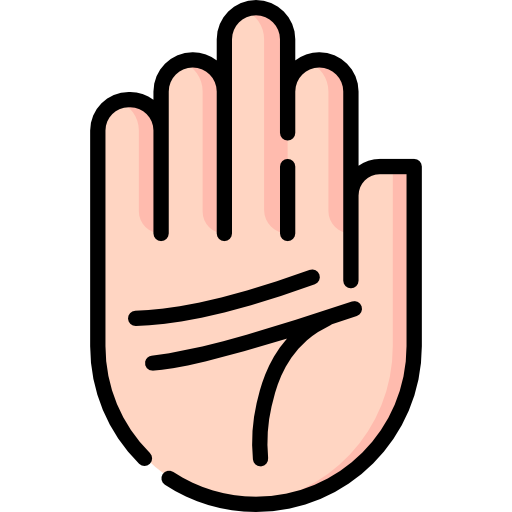
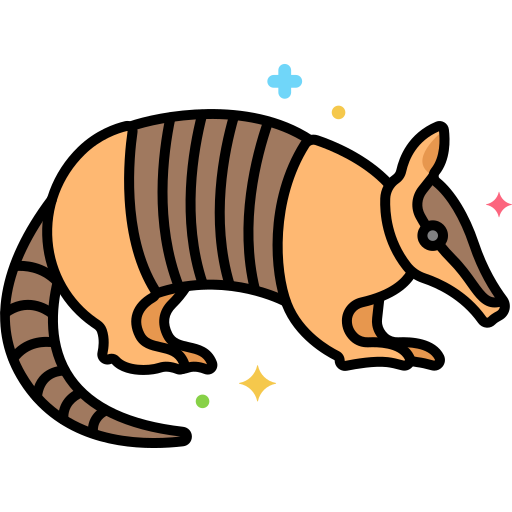
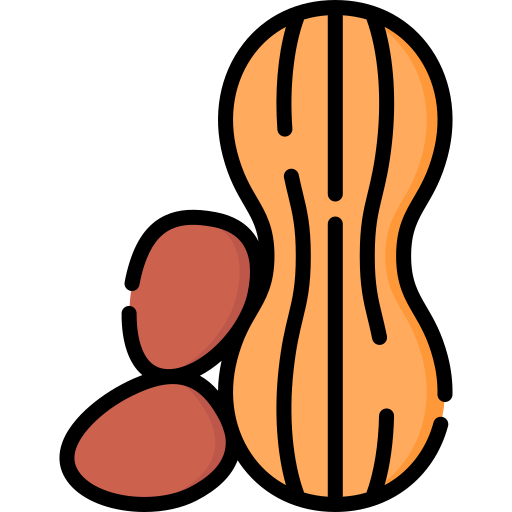
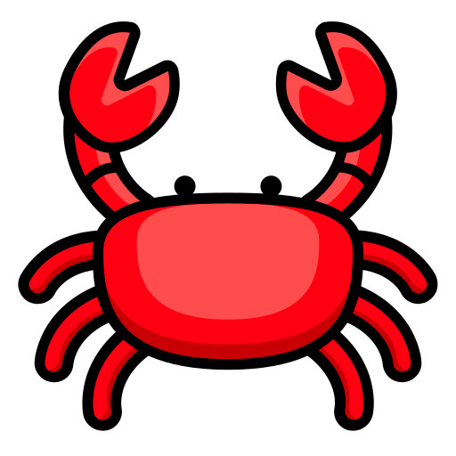
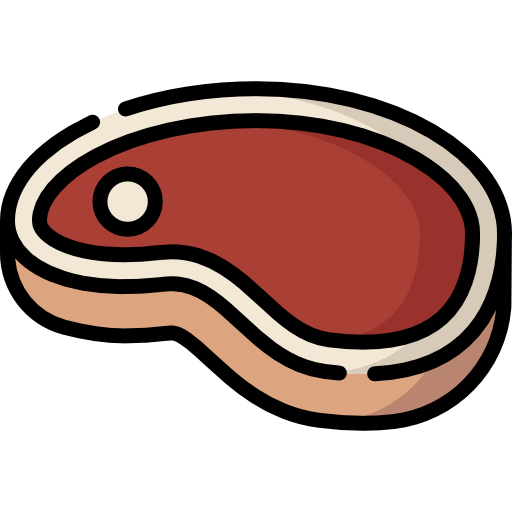
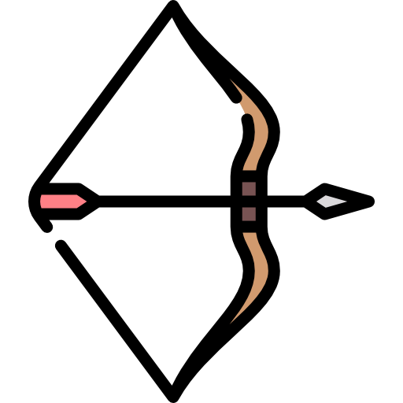

Ako - mano
Etini - armadillo
Inki - maní
Oshero - cangrejo- Ako - mano

Batsatsi - carne
Beanentsi - arco (instrumento de caza)- Birakocha - persona colona
- Borisa - bolsa
- Chakopi - flecha

Cherepito - especie de ave (martin pescador)
- Chikiri - chicle
- Chomoiki - fruta silvestre
- Etini - armadillo
- Inki - flecha
- Jananeki - niño
- Jebarentsi - abanico
- Jibari - jefe
- Jobentsi - bebe
- Kaniri - yuca
- Kemari - sachavaca
- Kiri - pijuayo (especie de palmera)
- Kotsiro - cuchillo
- Maniti - Tigre
- Mereto - anchoveta
- Mishi - gato
- Moropa - especie de plátano
- Naranka - naranja
- Netsi - piojo
- Nija - agua
- Nonampi - mi pueblo
- Ñakarontsi - número
- Añero - vemos
- Ñorinti - guarda caballo
- Maño - zancudo
- Oshero - cangrejo
- Perenti - Plátano
- Peranti - ocioso
- Pirinto - especie de rana
- Potsoti - achiote
- Parari - lobo marino
- Pareto - loro
- Periki - gorgojo
- Pocharo - tabaco
- Sani - avispa
- Saniri - lagarto
- Samani - majas (especie de roedor)
- Soroni - oso perezoso
- Sharoni - cutpe
- Osheki - mucho
- Shinki - maíz
- Shonkaro - círculo
- Tapetsa - tamshi
- Tenari - pesado
- Tisoni - gallinazo
- Tontori - erizo
- Tsarato - morral, bolsa
- Tsentero - especie de pona, palmera
- Tsiroti - paucar, ave que imita cualquier sonido o silbo producido por otros animales
- Tsorero - hongos
- Tyapa - gallina
- Kityonkari - color rojo
- Atyo - cuñada
- Tyopiki - pollito
- Yarato - especie de abeja
- Ankoye - recolectar
- Antyari - grande
- Yora - él
Ir al temario ↓
 Apankenatyaro - practicamos
Apankenatyaro - practicamos